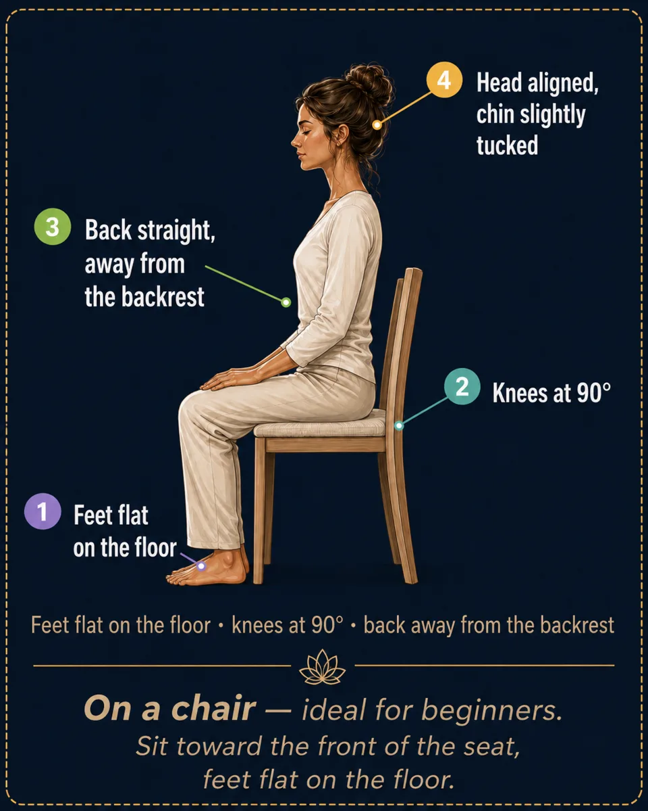
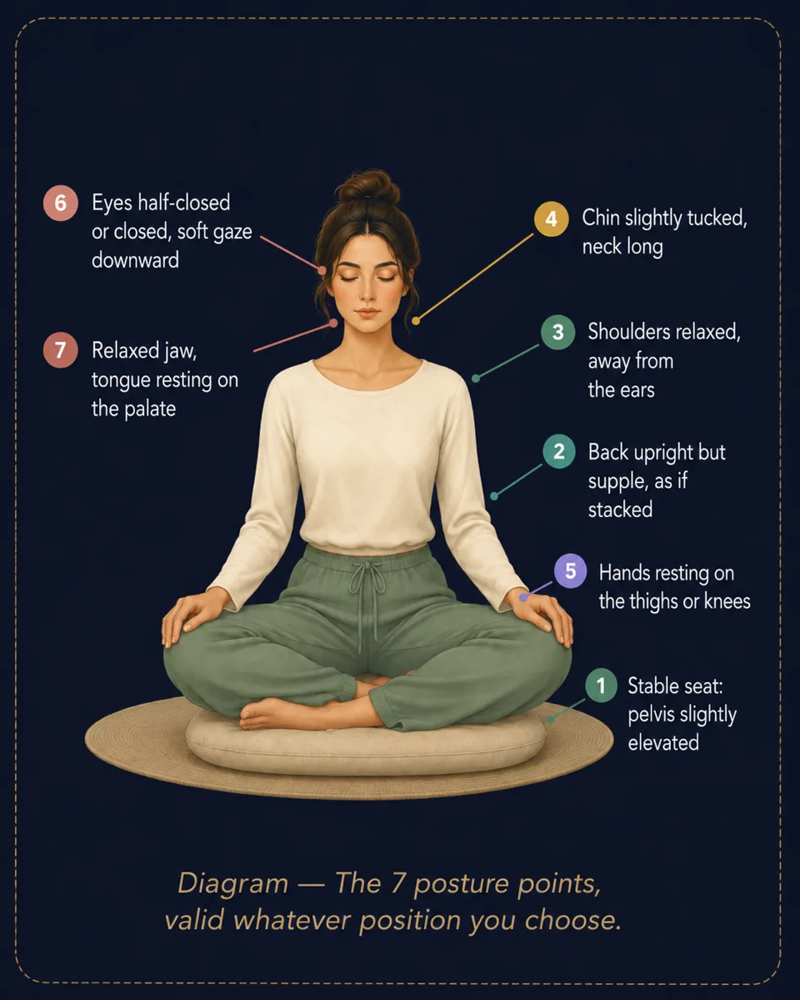
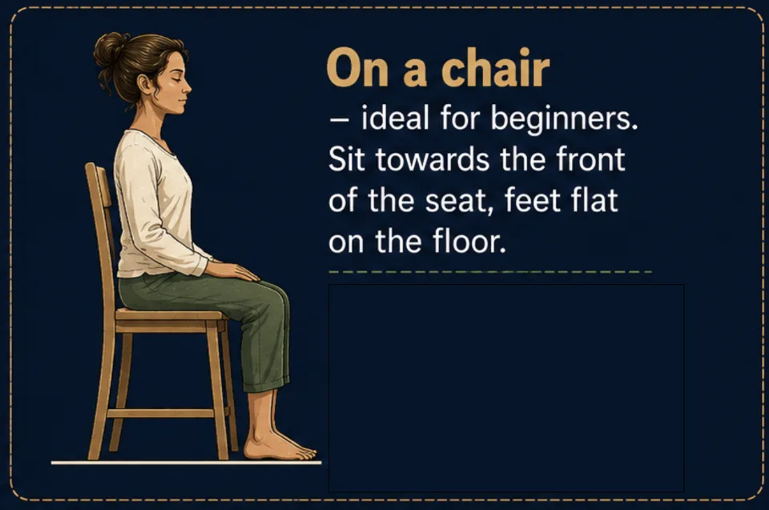
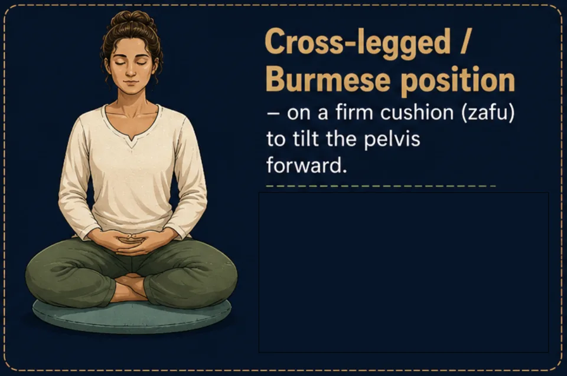
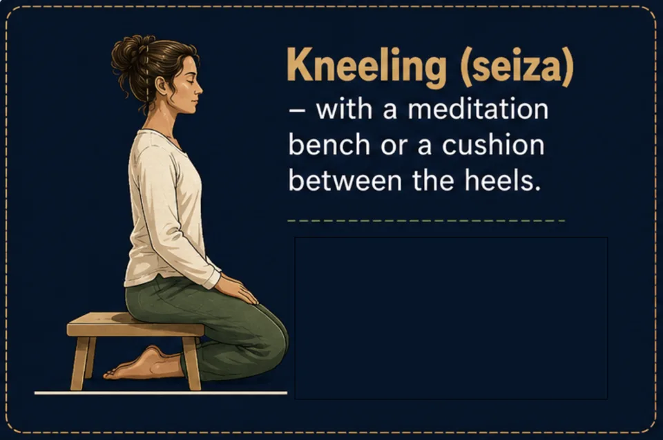

Meditation posture: 4 positions that actually work
Chair, cross-legged, seiza or lying down: the 4 meditation positions with diagrams, and the 7 points of a dignified, relaxed posture.
A meditation posture requires neither flexibility nor the lotus: on a chair, cross-legged, kneeling or lying down, it all comes down to seven simple points. Here's how to sit comfortably and meditate without pain, from your very first guided session.
Posture
The principle: “dignified and relaxed”
A good meditation posture fits in one formula: the back straightens, the rest lets go. Too slumped, the mind falls asleep; too rigid, the body tenses. Imagine a thread gently pulling the top of your skull toward the sky, while your shoulders, belly and jaw melt toward the ground.

Choosing your position: 4 options, no hierarchy
The best position is the one you can hold 10 to 20 minutes without pain. For a beginner, a chair is an excellent starting point.




Frequently asked questions
Do I need the lotus position to meditate?
No. The lotus is not required: a chair gives exactly the same quality of meditation. The only test is holding the position without pain for the whole session, back straight and body relaxed.
Can you meditate lying down?
Yes — especially for the body scan, deep relaxation and meditation for sleep. The risk is falling asleep: if that isn't the goal, keep a forearm raised or choose a seated position.
What if my back hurts while meditating?
Start on a chair, feet flat, sitting toward the front edge so the spine holds itself. If sharp pain appears, change position without hesitation: a good meditation posture stays comfortable.
Rather practice than read?
Everything in this article can be practiced in Awakening Minds, a free meditation app: 150 guided meditations — sleep, breathing, immersive worlds — no subscription, no ads, no account, and fully offline.
✦ Discover the free app